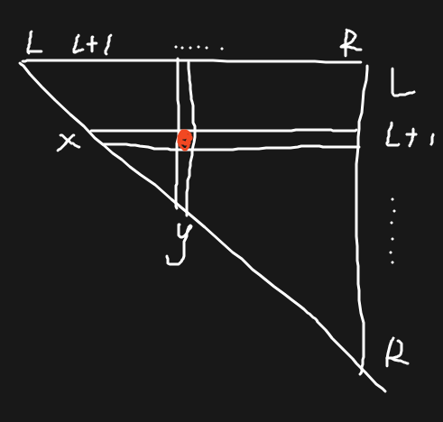
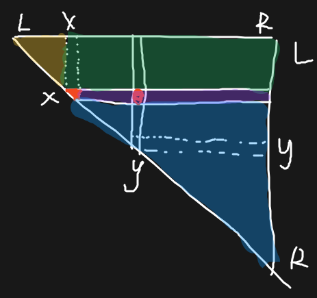
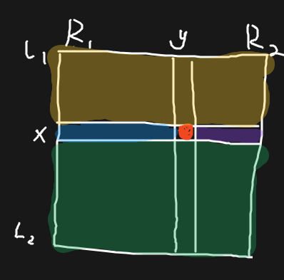
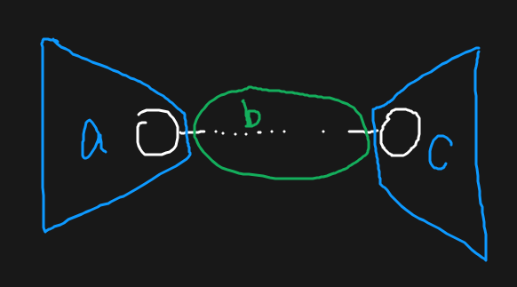

NOI Linux 2.0，拼尽全力无法战胜。
比方说我试图对我一片狼藉的屏幕进行一个图的截，但是我并不知道 where the so-called $PICTURE is 
这场有两个题都用到了 优先队列 + 最优答案扩展 的思路，可以记录一下。
A. 序列加法机
http://222.180.160.110:61235/contest/6174/problem/1
转化题意可以发现，三个不下降的限制拼起来其实就是没有限制。若令 \(c_i=|a_i-b_i|\)，则题意转化如下：
给定 \(c_{1\sim n}\)，定义一次操作为：
- 选择一个 \(x>0\)，再选择 \(c_i\ge x\)，令 \(c_i\gets c_i-x\)，并花费 \(x^2\) 的代价。
现可进行不超过 \(m\) 次操作，问将 \(c_i\) 全部置为 \(0\) 的最小代价。
有一个比较显然的事情，如果给 \(c_i\) 分配 \(k\) 次操作机会，那么每次减去 \(\dfrac {c_i}k\) 是最优的。具体地，令 \(p=\left\lfloor\dfrac {c_i}k\right\rfloor\)，那么给 \(k\) 个中的 \(c_i\bmod k\) 分配 \(p+1\)，给剩余的 \(k-c_i\bmod k\) 分配 \(p\) 即可。这个随便用反证什么的证一下即可。
但是我们怎么知道应该给每个 \(c_i\) 分配多少次操作次数呢？这里有个 trick：初始先给每个 \(c_i\) 分配一次次数，对于每个 \(c_i\)，记录给其多分配一次后能减少的代价，全部丢进优先队列里，将最优的拿出来之后，记录再给其多分配一次后能减少的代价，再丢进去。能这样做的根本原因在于：
- 每个元素的每一次扩展代价相同。
- 对于同一个元素，丢到优先队列里的值是递减的（即无后效性，可以贪心）。
有人对着对的代码调了半个小时，是谁呢
#include <bits/stdc++.h>
const int mod = 998244353;
int main() {
#ifdef ONLINE_JUDGE
std::ios::sync_with_stdio(false);
std::cin.tie(nullptr), std::cout.tie(nullptr);
std::freopen("seq.in", "r", stdin);
std::freopen("seq.out", "w", stdout);
#else
std::freopen("ex_seq2.in", "r", stdin);
std::freopen(".out", "w", stdout);
#endif
int n, m;
std::cin >> n >> m;
std::vector<long long> c(n + 1);
for (int i = 1; i <= n; ++i)
std::cin >> c[i];
struct _ {
int k;
long long org, d;
bool operator< (const _ &q) const {
return d < q.d;
}
};
std::priority_queue<_> q;
long long res = 0ll;
auto calc = [&](long long x, int k) {
auto p = x / k;
return (x % k) * (p + 1) * (p + 1) + (k - x % k) * p * p;
};
for (int i = 1, x; i <= n; ++i) {
std::cin >> x;
c[i] = std::abs(c[i] - x);
if (c[i]) {
(res += calc(c[i], 1) % mod) %= mod;
q.push({ 2, c[i], calc(c[i], 1) - calc(c[i], 2) });
}
}
// printf("res = %lld\n", res);
if ((int)q.size() > m)
std::cout << -1 << '\n';
else {
m -= (int)q.size();
for (; m--; ) {
auto [k, org, d] = q.top();
q.pop();
// printf("org = %lld, k = %d, d = %lld\n", org, k, d);
(res += mod - d % mod) %= mod;
q.push({ k + 1, org, calc(org, k) - calc(org, k + 1) });
}
std::cout << res << '\n';
}
return 0;
}B. 摸鱼军训
http://222.180.160.110:61235/contest/6174/problem/2
定义一次冒泡排序为：
for (int i = 1; i < n; ++i) if (a[i] > a[i + 1]) std::swap(a[i], a[i + 1]);现给定一个排列和 \(m\) 次询问，问第 \(k\) 轮冒泡排序后元素 \(x\) 的位置。
发现一个元素移动的原因有两种：
- 前面有个比它大的元素「冒泡」到它后面去了，本轮该元素向前移动恰好一步。
- 前面没有比它更大的元素，轮到它来向后面「冒泡」了。找到具体的位置是不容易的，但我们发现每次 \(i\) 向右移动一步，都一定会有一个比 \(i\) 更小的元素被它交换到 \(i\) 左边。找到有多少个在 \(i\) 右边且比 \(i\) 小的元素到了 \(i\) 左边就可以得到这一种情况下 \(i\) 的位置。
容易发现，只要前面存在比它大的元素，那么第一条始终成立。树状数组统计 \(f_i\) 为元素 \(i\) 前比它大的元素个数，对于询问 \((k,i)\)，若 \(k\le f_i\)，那么答案即为 \(pos_i-k\)。
第 \(f_i+1\) 轮，\(i\) 向后「冒泡」，碰到一个比它更大的元素 \(j\) 即停止，此时 \(j\) 接替 \(i\) 向后「冒泡」，直到碰到一个 \(j'>j\) 为止，以此类推。
如何将 \(k\) 轮后 \(i\) 停下的位置对应到原数组上呢？我们发现每一轮 \(i\) 跨越的元素一定是比 \(i\) 小的可空极长段，手玩可以发现段的数量不会因为 \(i\) 之后任何元素的移动而改变，故找到 \(i\) 后第 \(k\) 个比 \(i\) 大的元素，中间比 \(i\) 小的元素个数就是 \(i\) 的右移步数。
#include <bits/stdc++.h>
int main() {
std::ios::sync_with_stdio(false);
std::cin.tie(nullptr), std::cout.tie(nullptr);
std::freopen("bubble.in", "r", stdin);
std::freopen("bubble.out", "w", stdout);
int n, m;
std::cin >> n;
std::vector<int> a(n + 1), bit(n + 1), p(n + 1), f(n + 1), bit1(n + 1);
auto lowbit = [&](int x) {
return x & -x;
};
auto add = [&](std::vector<int> &bit, int x, int v) {
for (; x <= n; x += lowbit(x))
bit[x] += v;
return;
};
auto qry = [&](std::vector<int> &bit, int x) {
int res = 0;
for (; x; x -= lowbit(x))
res += bit[x];
return res;
};
auto ask = [&](std::vector<int> &bit, int l, int r) {
if (l > n || r < 1)
return 0;
return qry(bit, r) - qry(bit, l - 1);
};
for (int i = 1; i <= n; ++i) {
std::cin >> a[i], p[a[i]] = i;
f[a[i]] = ask(bit, a[i] + 1, n), add(bit, a[i], 1);
}
struct _ { int k, id; };
std::vector<std::vector<_> > t(n + 1);
std::cin >> m;
std::vector<int> res(m + 1);
for (int i = 1, x, k; i <= m; ++i) {
std::cin >> k >> x;
t[x].push_back({ k, i });
}
for (int i = 1; i <= n; ++i) {
add(bit, p[i], -1);
for (auto [k, id] : t[i])
if (k <= f[i])
res[id] = p[i] - k;
else {
int now = n;
for (int l = p[i] + 1, r = n, mid; l <= r; ) {
mid = (l + r) >> 1;
if (ask(bit, p[i] + 1, mid) >= k - f[i])
r = mid - 1, now = mid;
else
l = mid + 1;
}
// printf("%d: now = %d\n", i, now);
res[id] = p[i] - f[i] + ask(bit1, p[i] + 1, now);
}
add(bit1, p[i], 1);
}
for (int i = 1; i <= m; ++i)
std::cout << res[i] << '\n';
return 0;
}C0. 超级钢琴
https://www.luogu.com.cn/problem/P2048
首先做前缀和，容易想到枚举右端点，那么左端点就是一段连续的区间。显然在这里最优选择是选择左端点中 \(s\) 最小的一个。
怎么求前 \(k\) 大呢？这里有一个很固定的 trick：把每个右端点及其对应的左端点区间丢到优先队列里，按照最优解（用 ST 表找一下即可）从优到劣排序。
每次取出最优解 \([l_1, l_2], r\)，假设最优决策为 \(x\in [l_1, l_2]\)，那么把 \([l_1, x), r\) 和 \((x, l_2], r\) 分别丢到优先队列里去。这个做法成立的根本原因也是：
- 任何一个元素都可以贡献一次答案。
- 对于同一个 \(r\)，随着拆分次数的增加，最优解逐渐变劣（无后效性，可贪心）。
#include <bits/stdc++.h>
int main() {
#ifdef ONLINE_JUDGE
std::ios::sync_with_stdio(false);
std::cin.tie(nullptr), std::cout.tie(nullptr);
#else
std::freopen(".in", "r", stdin);
std::freopen(".out", "w", stdout);
#endif
int n, k, l, r;
std::cin >> n >> k >> l >> r;
std::vector<long long> a(n + 1);
std::vector<std::vector<long long> > st(21, std::vector<long long> (n + 1));
for (int i = 1; i <= n; ++i)
std::cin >> a[i], st[0][i] = i;
std::partial_sum(a.begin() + 1, a.end(), a.begin() + 1);
for (int j = 1; (1 << j) <= n + 1; ++j) // 一个优秀的笑话是，你的 ST 表需要从 0 开始。而长度自然也应该为 n + 1。
for (int i = 0; i + (1 << j) - 1 <= n; ++i)
st[j][i] = (a[st[j - 1][i]] <= a[st[j - 1][i + (1 << (j - 1))]] ? st[j - 1][i] : st[j - 1][i + (1 << (j - 1))]);
auto ask = [&](int l, int r) {
int k = std::__lg(r - l + 1);
return a[st[k][l]] <= a[st[k][r - (1 << k) + 1]] ? st[k][l] : st[k][r - (1 << k) + 1];
};
struct _ {
int l1, l2, r, x;
long long v;
bool operator< (const _ &q) const {
return v < q.v;
}
};
std::priority_queue<_> q;
for (int i = l; i <= n; ++i) {
_ t;
t.l1 = std::max(i - r, 0), t.l2 = i - l, t.r = i, t.x = ask(t.l1, t.l2), t.v = a[i] - a[t.x];
q.push(t);
}
long long res = 0ll;
for (int to; k--; ) {
auto [l1, l2, r, x, v] = q.top();
q.pop();
res += v;
if (x != l1) {
to = ask(l1, x - 1);
q.push({ l1, x - 1, r, to, a[r] - a[to] });
}
if (x != l2) {
to = ask(x + 1, l2);
q.push({ x + 1, l2, r, to, a[r] - a[to] });
}
}
std::cout << res << '\n';
return 0;
}C1. 皮卡丘
http://222.180.160.110:61235/contest/6174/problem/3
给定 \(a_{1\sim n}\) 和 \(m\) 个询问，每次问 \([l, r]\) 中前 \(k\) 大 \(a_l-a_r\) 的和。\(\sum k\le 3\times 10^5\)。
我们发现不能直接按照上一题的方法来做——每次询问都把 \(len\) 个元素丢进优先队列是不现实的。但我们似乎忽略了什么——这次的初始最优解是否可以直接在 \([l,r]\) 上全局求解？
区间修改操作就是在明示线段树。显然我们可以差分过后线段树上求解最大子段和——不差分也可以照样维护答案，方法差不多。假设现在求得的最优解为 \((x, y)\)。
但此时我们没有一个端点是固定的！应该怎样拆分呢？这里又要用到另一个经典的 trick——抽象一个矩阵 \(b_{i,j}=a_i-a_j\)，那么对于一次询问，可用的 \(b\) 构成一个三角形：

这里需要注意一个点，我们之所以可以通过最大子段和求得最优解是因为矩阵的行号范围和列号范围是一致的（记为情况 1）。除此之外，除了行号和列号完全相离（即 \(l_2<r_1\)，记为情况 2） 时可以直接用 \(l_{\max}-r_{\min}\) 求解，其他情况都无法简单得到答案。
也就是说，我们的拆分方式要尽可能地贴近上面两种可求解的情况。幸运地是，直觉地划分可以比较轻松地在初始状态下得到一种可能的方式：

容易注意到初始状态属于情况 1，可以按照图所示，按照行号与 \(x\) 的大小关系分类，得到：
- 行 \(<x\)，列 \(<x\)；
- 行 \(<x\)，列 \(\ge x\)；
- 行 \(=x\)，列 \(=x\)；
- 行 \(=x\)，列 \(\in (x,y)\)；
- 行 \(=x\)，列 \(>y\)；
- 行 \(>x\)，列 \(>x\)。
几个 part。
如果我们要对情况 2 进行划分呢？这也是轻松的，假设当前图形满足行： \([l_1, l_2]\)，列：\([r_1, r_2]\)（显然这是个完整的矩形），且最优解 \((x, y)\)。容易发现任意行、列一定相离，故根据 \((x, y)\) 划分即可：

也即以下几个 part：
- 行 \(<x\)；
- 行 \(=x\)，列 \(<y\)；
- 行 \(=x\)，列 \(>y\)；
- 行 \(>x\)。
复杂度 \(O(\sum k\log)\)。注意到线段树的 \(\log\) 和优先队列的 \(\log\) 并不会叠起来。
意外的很难写 
主要是线段树写起来有点答辩了
#include <bits/stdc++.h>
const int maxn = 1e5 + 5;
struct __ {
int l, r;
int i0, i1, s0, s1;
long long u, d, u0, u1;
__ operator+ (const __ &q) const {
__ res;
res.l = l, res.r = q.r, res.d = 0ll;
res.u = std::max({ u, q.u, u1 - q.u0 });
if (res.u == u)
res.s0 = s0, res.s1 = s1;
else if (res.u == q.u)
res.s0 = q.s0, res.s1 = q.s1;
else
res.s1 = i1, res.s0 = q.i0;
if (u0 < q.u0)
res.u0 = u0, res.i0 = i0;
else
res.u0 = q.u0, res.i0 = q.i0;
if (u1 > q.u1)
res.u1 = u1, res.i1 = i1;
else
res.u1 = q.u1, res.i1 = q.i1;
return res;
}
} t[maxn << 2];
long long a[maxn];
#define lt (p << 1)
#define rt (lt | 1)
void pushdown(int p) {
if (t[p].d) {
t[lt].d += t[p].d, t[rt].d += t[p].d;
t[lt].u0 += t[p].d, t[lt].u1 += t[p].d;
t[rt].u0 += t[p].d, t[rt].u1 += t[p].d;
t[p].d = 0;
}
return;
}
void pushup(int p) {
t[p] = t[lt] + t[rt];
return;
}
void bld(int p, int l, int r) {
t[p].l = l, t[p].r = r;
if (l == r) {
t[p].i0 = t[p].i1 = t[p].s0 = t[p].s1 = l;
t[p].u0 = t[p].u1 = a[l];
return;
}
int mid = (l + r) >> 1;
bld(lt, l, mid), bld(rt, mid + 1, r);
pushup(p);
return;
}
void add(int p, int l, int r, long long v) {
if (l <= t[p].l && t[p].r <= r) {
t[p].u0 += v, t[p].u1 += v, t[p].d += v;
return;
}
pushdown(p);
int mid = (t[p].l + t[p].r) >> 1;
if (l <= mid)
add(lt, l, r, v);
if (r > mid)
add(rt, l, r, v);
pushup(p);
return;
}
auto ask(int p, int l, int r) {
if (l <= t[p].l && t[p].r <= r)
return t[p];
pushdown(p);
int mid = (t[p].l + t[p].r) >> 1;
if (r <= mid)
return ask(lt, l, r);
if (l > mid)
return ask(rt, l, r);
return ask(lt, l, r) + ask(rt, l, r);
}
int main() {
#ifdef ONLINE_JUDGE
std::ios::sync_with_stdio(false);
std::cin.tie(nullptr), std::cout.tie(nullptr);
std::freopen("pi.in", "r", stdin);
std::freopen("pi.out", "w", stdout);
#else
std::freopen("ex_pi2.in", "r", stdin);
std::freopen(".out", "w", stdout);
#endif
int n, m;
std::cin >> n >> m;
for (int i = 1; i <= n; ++i)
std::cin >> a[i];
bld(1, 1, n);
for (int op; m--; ) {
std::cin >> op;
if (op == 1) {
int l, r, x;
std::cin >> l >> r >> x;
add(1, l, r, x);
}
else {
int l, r, k;
std::cin >> l >> r >> k;
struct _ {
int ty, l1, l2, r1, r2, x, y;
long long v;
bool operator< (const _ &q) const {
return v < q.v;
}
};
long long res = 0ll;
std::priority_queue<_> q;
auto calc = [&](int ty, int l1, int l2, int r1, int r2) {
if (l1 <= l2 && r1 <= r2) {
if (ty == 1) {
auto ts(ask(1, l1, l2));
q.push({ 1, l1, l2, r1, r2, ts.s1, ts.s0, ts.u });
}
else {
auto ls(ask(1, l1, l2)), rs(ask(1, r1, r2));
q.push({ 2, l1, l2, r1, r2, ls.i1, rs.i0, ls.u1 - rs.u0 });
}
}
return;
};
calc(1, l, r, l, r);
for (; k--; ) {
auto [ty, l1, l2, r1, r2, x, y, v] = q.top();
res += v;
q.pop();
if (ty == 1) {
calc(1, l1, x - 1, r1, x - 1);
calc(2, l1, x - 1, x, r2);
if (x != y)
calc(1, x, x, x, x);
calc(2, x, x, x + 1, y - 1);
calc(2, x, x, y + 1, r2);
calc(1, x + 1, l2, x + 1, r2);
}
else {
calc(2, l1, x - 1, r1, r2);
calc(2, x, x, r1, y - 1);
calc(2, x, x, y + 1, r2);
calc(2, x + 1, l2, r1, r2);
}
}
std::cout << res << '\n';
}
}
return 0;
}D. 银行的崛起
http://222.180.160.110:61235/contest/6174/problem/4
原题：CodeChef CTREE - Chef and Chefcoin。
假设只需要一个关键点，那么容易想到换根 DP 的做法。但仅凭这个比较 naive 的思路是无法靠近正解的。找题解的时候看到一个惊为天人的式子：\(res=\sum\limits_{(u, v): w} f(v)=w\cdot \min(s_v,n-s_v)\)，其中 \(s_v\) 表示 \(v\) 的 size。
乍一看是在讨论关键点要选在 \(v\) 外部还是内部，但是 \(\min\) 的含义很奇怪——假如有多个点都觉得应该往自己内部走呢？考虑如下普适场景：

假如 \(a\) 和 \(c\) 都觉得应该往自己内部走，就会有 \(\begin{cases}a>b+c\\c>a+b\end{cases}\Rightarrow 0>2\times b\)，由此就反证了。
那么显然 \(f(v)=w\cdot s_v\iff s_v\le \dfrac n2\)，转化成带权重心问题，可以 \(O(n)\) 一次 DFS 解决。那扩展到两个呢？手玩发现存在一条边作为两个选择倾向的点的分界，不会被任何一方经过（显然），枚举这条分割线切断就可以得到两个子树；在子树上分别作一次一个关键点的做法，加起来就是这条边的答案。
显然这是 \(O(n^2)\) 的，需要优化。能够感受到枚举边的过程不太能被优化，考虑优化求解上面式子的过程。容易想到换根，记 \(s'\) 为当前版本时刻变化的 size，\(s\) 为初始值，那么有：
- \(u\) 侧，对于 \(u\) 的所有祖先 \(\{fa\}\)，\(s'_{fa}=s_{fa}-s_v\)，\(n'=n-s_v\)。
- \(v\) 侧，所有点 \(\{son\}\) 有 \(s'_{son}=s_{son}\)，\(n'=s_v\)。
我们需要维护所有 \(s'\) 和 \(\dfrac {n'}2\) 的大小关系——发现这是一个类似二维偏序的问题，即求：
- DFN 在 \(v\) 子树范围内，且 \(s\le \dfrac {s_v}2\) 的权值。
- DFN 在 \(v\) 之前 / 之后，且 \(s\le \dfrac {n-s_v}2\) 的权值。
记录询问的 DFN 区间，离线（？）下来按照 \(n'\) 排序，随便用个 DFN 上的 DS 统计一下即可。但 \(u\) 侧的 \(s'_{fa}\) 会发生变化，没办法离线处理，考虑费用提前计算消除误差——找到比 \(\dfrac {n-s_v}2\) 大，但减去 \(s_v\) 后比之小的 \(fa\) 提前处理。
发现由于 \(s\) 随着 \(fa\) 往上是单调递增的，满足这个条件的 \(fa\) 是连续的。用树上倍增框出上下端点 \((fa_p\to fa_q]\) 进行费用提前计算。那么就可以 \(O(n\log)\) 的解决问题了。
具体地，如何提前计算？
记 \(diw_x\) 为从 \(1\) 到 \(x\) 的路径上所有点 \(s\cdot w\) 之和。
那么有：
| 项 | 真实值 | 计算值 | \(\sum\Delta\) |
|---|---|---|---|
| \(x\notin\{fa\}\land x\notin\{son\}\) | \(w_x\cdot \min(s_x,n'-s_x)\) | \(w_x\cdot \min(s_x,n'-s_x)\) | \(0\) |
| \(x\in[1\to fa_p]\) | \(w_x\cdot (s_x - s_v)\) | \(w_x\cdot s_x\) | \(-dis_p\times s_v\) |
| \(x\in (fa_p\to fa_q]\) | \(w_x\cdot (n-s_x)\) | \(w_x\cdot s_x\) | \(n\times(dis_q-dis_p)-2\times (diw_q - diw_p)\) |
| \(x\in(fa_q,v)\) | \(w_x\cdot (n-s_x)\) | \(w_x\cdot (n-s_x-s_v)\) | \(s_v\cdot (dis_u-dis_q)\) |
| \(x\in \{son\}\) | \(w_x\cdot \min(s_x,n'-s_x)\) | \(w_x\cdot \min(s_x,n'-s_x)\) | \(0\) |
即需将答案 减去 \(n\times(dis_q-dis_p)-2\times (diw_q - diw_p)+s_v\cdot (dis_u-dis_q-dis_p)\)。
#include <bits/stdc++.h>
int main() {
std::ios::sync_with_stdio(false);
std::cin.tie(nullptr), std::cout.tie(nullptr);
#ifdef ONLINE_JUDGE
std::freopen("banking.in", "r", stdin);
std::freopen("banking.out", "w", stdout);
#else
std::freopen(".in", "r", stdin);
std::freopen(".out", "w", stdout);
#endif
int T;
for (std::cin >> T; T--; ) {
int n;
std::cin >> n;
std::vector<long long> a(n + 1);
long long sw = 0ll;
for (int i = 1; i <= n; ++i)
std::cin >> a[i], sw += a[i];
std::vector<std::vector<std::pair<int, long long> > > g(n + 1);
for (int i = 1, x, y, w; i < n; ++i) {
std::cin >> x >> y >> w;
g[x].emplace_back(y, w), g[y].emplace_back(x, w);
}
struct _ { int l, r, id; long long v; };
int now = 0;
std::vector<_> q;
std::vector<int> dfn(n + 1), rfn(n + 1);
std::vector<std::vector<int> > f(n + 1, std::vector<int> (21));
std::vector<long long> dis(n + 1), diw(n + 1), w(n + 1), res(n + 1), s(n + 1);
std::function<void(int, int)> DFS = [&](int x, int fa) { // 前置工作
dfn[x] = ++now, s[x] = a[x];
for (auto [i, tw] : g[x])
if (i != fa) {
w[i] = tw;
f[i][0] = x;
for (int j = 1; j <= 20; ++j)
f[i][j] = f[f[i][j - 1]][j - 1];
DFS(i, x);
s[x] += s[i];
}
rfn[x] = now;
return;
};
DFS(1, -1);
DFS = [&](int x, int fa) {
for (auto [i, tw] : g[x])
if (i != fa) {
dis[i] = dis[x] + tw;
diw[i] = diw[x] + tw * s[i];
q.push_back({ dfn[i], rfn[i], i, s[i] });
q.push_back({ 1, dfn[i] - 1, i, sw - s[i] });
q.push_back({ rfn[i] + 1, n, i, sw - s[i] });
int p, q;
long long t = (sw - s[i]) / 2;
{ // 找上端点（开的）
p = i;
for (int j = 20; ~j; --j)
if (f[p][j] && s[f[p][j]] - s[i] <= t)
p = f[p][j];
p = f[p][0];
}
{ // 找下端点（闭的）
q = i;
for (int j = 20; ~j; --j)
if (f[q][j] && s[f[q][j]] <= t)
q = f[q][j];
q = f[q][0];
}
res[i] -= sw * (dis[q] - dis[p]) - 2 * (diw[q] - diw[p]) + (dis[x] - dis[p] - dis[q]) * s[i];
DFS(i, x);
}
return;
};
DFS(1, -1);
std::vector<int> id(n + 1);
std::iota(id.begin() + 1, id.end(), 1);
std::sort(id.begin() + 1, id.end(), [&](int x, int y) { return s[x] < s[y]; });
std::sort(q.begin(), q.end(), [&](_ x, _ y) { return x.v < y.v; });
std::vector<std::pair<long long, long long> > bit(n + 1);
auto lowbit = [&](int x) { return x & -x; };
auto add = [&](int x, std::pair<long long, long long> v) {
for (; x <= n; x += lowbit(x))
bit[x].first += v.first, bit[x].second += v.second;
return;
};
auto ask = [&](int x) {
std::pair<long long, long long> res;
for (; x; x -= lowbit(x))
res.first += bit[x].first, res.second += bit[x].second;
return res;
};
auto j = ++id.begin();
for (auto &[l, r, x, v] : q) {
for (; j != id.end() && s[*j] <= v / 2; ++j)
add(dfn[*j], { w[*j], s[*j] * w[*j] });
auto ls(ask(l - 1)), rs(ask(r));
rs.first -= ls.first, rs.second -= ls.second;
res[x] += rs.second;
}
bit.assign(n + 1, { 0ll, 0ll });
std::reverse(q.begin(), q.end());
std::reverse(id.begin(), id.end());
j = ++id.begin();
for (auto &[l, r, x, v] : q) {
for (; j != id.end() && s[*j] > v / 2; ++j)
add(dfn[*j], { w[*j], s[*j] * w[*j] });
auto ls(ask(l - 1)), rs(ask(r));
rs.first -= ls.first, rs.second -= ls.second;
res[x] += rs.first * v - rs.second;
}
std::cout << *std::min_element(res.begin() + 2, res.end()) << '\n';
}
return 0;
}